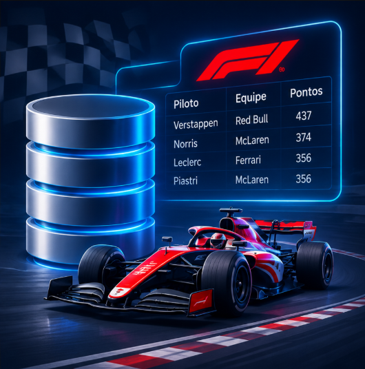
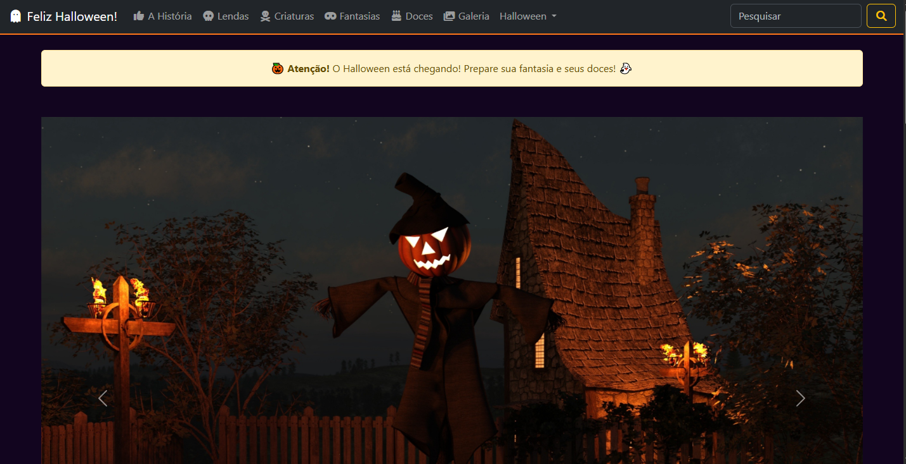

Python
Desenvolvimento de aplicações e lógica.
OLÁ, SEJA BEM-VINDO AO MEU PORTFÓLIO
Estudante de Ciência da Computação, apaixonado por tecnologia, programação e desenvolvimento de soluções.
Conheça meus projetos Entre em contatoMeu nome é Yago Fernandes de Almeida, sou estudante de Ciência da Computação e estou construindo minha trajetória na área de tecnologia.
Tenho interesse em desenvolvimento de software, inteligência artificial, banco de dados e desenvolvimento web.
UDF Centro Universitário.
Atualmente estou finalizando o segundo semestre de Ciência da Computação, desenvolvendo conhecimentos em programação, desenvolvimento de software, banco de dados e tecnologia.
2º semestreDesenvolvimento de aplicações e lógica.
Fundamentos de programação.
Estruturação de páginas web.
Estilização e responsividade.
Interatividade para aplicações web.
Modelagem e consultas em bancos de dados.
Alguns projetos que desenvolvi durante minha jornada na programação.
Chatbot desenvolvido em Python com inteligência artificial para interagir com usuários.

Sistema em Python para cadastrar produtos, controlar entradas, saídas e consultar estoque.
Aplicativo em desenvolvimento com o objetivo de realizar diagnósticos de rede.

Projeto de modelagem relacional com tabelas, relacionamentos e consultas SQL.
Projeto desenvolvido em linguagem C com operações matemáticas básicas e funções científicas, incluindo trigonometria, logaritmos, fatorial e outras operações.

Site temático desenvolvido para explorar o universo do Halloween, apresentando histórias, criaturas, lendas, fantasias e uma galeria de imagens.
Estou aberto a oportunidades, conexões e novos aprendizados.
GitHub LinkedIn